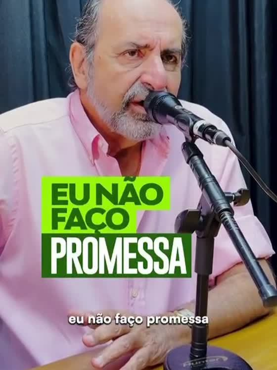
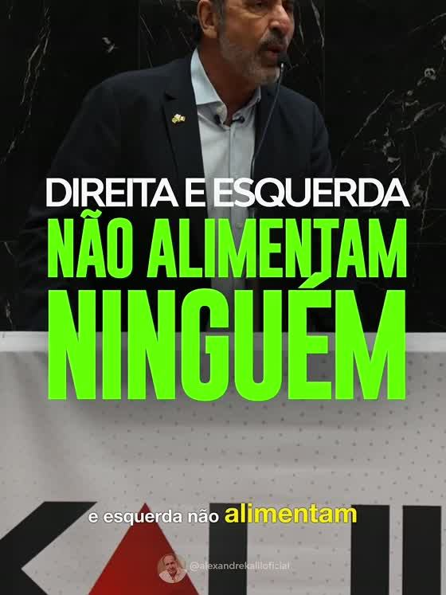
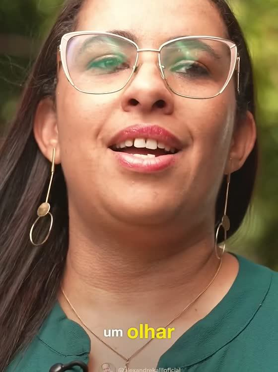
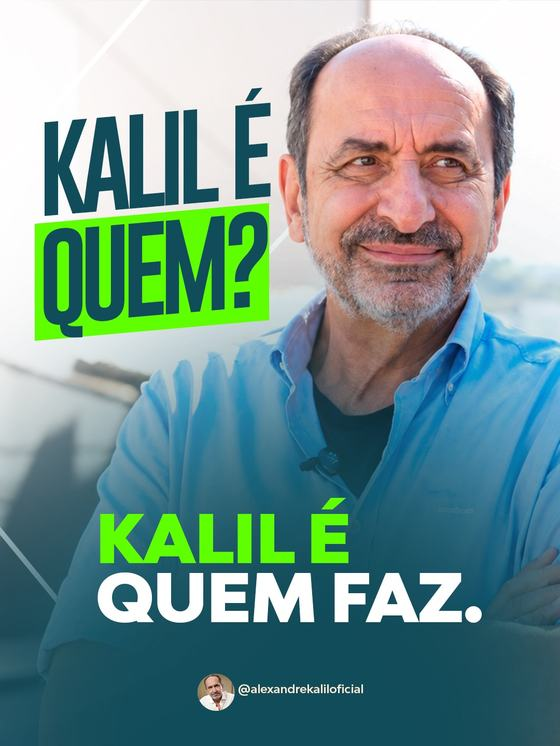

o que funcionou na pré-campanha
Os melhores anúncios em view, seguidor e compartilhamento; o raio-x de cada cluster; e onde cada resultado sai mais barato.
O que os 32 dias de pré-campanha deixaram pronto para usar. O número de cada afirmação está nas páginas seguintes.
Ocupa o pódio inteiro do view, as duas primeiras posições do compartilhamento e, na versão V2, gerou 66% de todas as visitas ao perfil da conta. Rodou em seis campanhas, quatro objetivos e dois públicos sem perder eficiência. Vale sustentar e produzir variações antes que canse.
24% do investimento, seguidor 51% abaixo da média, view 15% abaixo e visita ao perfil 64% abaixo. Todo esse resultado saiu de uma única peça. É o território com maior retorno por real e o mais carente de variedade criativa: merece mais verba e mais conceitos.
Os dois recortes já provaram o que foram testados a fazer: o VT Mulheres entregou compartilhamento e view na média da conta, e o Triângulo entregou o CPM mais barato de todos. Falta aplicar neles a estrutura de Visitas ao Perfil, que é o que gerou os melhores seguidores do período. São dois testes baratos, com alta chance de repetir o resultado das outras praças.
Conta Alexandre Kalil no Meta Ads, de 16 de julho a 16 de agosto de 2026. Trinta e dois dias, 15 campanhas, 17 anúncios no ar.
O CPM de R$ 5,02 fica entre um quarto e dois terços do que o mercado eleitoral pratica. As páginas a seguir mostram onde, dentro dessa entrega, cada resultado saiu mais barato.
Pessoas alcançadas: número deduplicado, apurado em consulta única no Gerenciador.
Crescimento total dos perfis, orgânico e pago somados, de 16 de julho a 16 de agosto de 2026.
Os R$ 3.514,01 investidos divididos pelos 5.601 seguidores do período dão R$ 0,63. Esse número mede o investimento contra todo o crescimento da conta, pago e orgânico, não é custo de aquisição por mídia. O custo por seguidor atribuído à mídia paga, usado nos rankings a seguir, é R$ 10,65.
Média da conta: R$ 0,032 por view
É o mesmo filme nas três posições. "Eu não faço promessa" ocupa o pódio inteiro rodando em três objetivos diferentes, ThruPlay, Engajamento e Reconhecimento, e em dois públicos que não se conversam, o Estado de MG e o Público Cleitinho. Todos entregam o view pela metade da média da conta ou menos. O criativo carrega o resultado independentemente de onde é colocado.
Média da conta: R$ 10,65 por seguidor
As cinco primeiras posições do ranking são campanhas de Visitas ao Perfil, todas bem abaixo da média da conta, de R$ 1,47 a R$ 13,33 por seguidor. Quando o destino do anúncio é o perfil, o seguidor sai na casa de um a três reais. É a receita mais eficiente que o período revelou, e ela já está pronta para escalar na campanha oficial.
Média da conta: R$ 19,52 por envio
"Eu não faço promessa" repete as duas primeiras posições numa métrica completamente diferente do view. E o envio tem endereço: o Estado de MG concentrou 75 dos 180 compartilhamentos do período, 42% do total, a R$ 7,98 cada, 59% abaixo da média da conta. Os dois primeiros colocados vêm de objetivos distintos, o que indica que o compartilhamento está no conteúdo e na praça, não na configuração da campanha.
Média da conta: R$ 0,82 por visita · 4.281 visitas no período
Um único anúncio gerou 66% de todas as visitas ao perfil do período. "Eu não faço promessa V2", rodando no Público Cleitinho, trouxe 2.814 das 4.281 visitas, a R$ 0,12 cada, quase sete vezes mais barato que a média da conta. É também o segundo colocado em custo por seguidor: as duas métricas andam juntas, e é o mesmo anúncio que puxa as duas.
Quatro dos criativos que sustentam os rankings deste relatório, com o papel que cada um cumpriu no período.

Eu não faço promessaO criativo do período. Pódio inteiro do view, duas primeiras posições do compartilhamento e, na versão V2, 66% das visitas ao perfil da conta.R$ 0,014 por view · R$ 0,12 por visita
Aftermovie ConvençãoO mais versátil. Com menos de R$ 100 investidos entregou o seguidor mais barato de toda a conta.R$ 1,47 por seguidor · R$ 0,23 por visita
VT MulheresÚnico criativo do recorte, numa campanha só de vídeo. Compartilhamento e view em linha com a média da conta.R$ 19,72 por envio · R$ 0,037 por view
Kalil Faz · carrosselÚnico formato estático do período, e o mais eficiente para construir presença: 117 mil impressões por menos de R$ 300.R$ 1,86 de CPM em AlcanceO cluster que mais rendeu por real investido. Seguidor 51% abaixo da média, view 15% abaixo e visita ao perfil 64% abaixo, a R$ 0,30 contra R$ 0,82 da conta. E tudo isso com um único criativo no ar, "Eu não faço promessa V2", sustentando o cluster inteiro, o que significa que ainda há muita margem: mais verba e novas peças aqui têm alta chance de repetir o resultado.
O Aftermovie da Convenção é o criativo mais versátil da conta: sozinho, entrega o seguidor mais barato do período inteiro (R$ 1,47), o terceiro melhor compartilhamento e um view em linha com a média, três resultados diferentes com a mesma peça. A RMBH também confirma a receita do relatório: foi na campanha de Visitas ao Perfil que esse filme rendeu o seguidor a R$ 1,47. Criativo forte no objetivo certo é o que produz o melhor número da conta.
O cluster do view e do compartilhamento, os dois mais baratos da conta inteira, e por margem larga. O Estado de MG é onde "Eu não faço promessa" alcança o seu melhor desempenho: R$ 0,014 por view e R$ 5,82 por envio, ambos primeiros lugares no ranking geral. É a praça que faz o conteúdo circular. O próximo ganho aqui é somar uma campanha de Visitas ao Perfil ao que já funciona: no único teste com esse objetivo, o seguidor saiu a R$ 13,33.
O recorte com a maior oportunidade em aberto. Com 10,7% da verba e uma única campanha de ThruPlay, o VT Mulheres entregou compartilhamento e view em linha com a média da conta, desempenho sólido para um teste inicial de um só criativo. O que ainda não foi ao ar aqui é a campanha de Visitas ao Perfil, justamente a estrutura que produziu os melhores seguidores do período. É o teste mais promissor para o próximo ciclo: o público responde, e a receita que funciona no resto da conta ainda não foi aplicada nele.
A praça mais barata da conta para construir presença. Com R$ 2,55 de CPM no cluster e R$ 1,86 na campanha de Alcance, o Triângulo entregou 117 mil impressões por menos de R$ 300, comprar atenção ali custa menos do que em qualquer outro lugar da conta. O período serviu para abrir a praça e provar esse custo. Agora que o CPM está comprovado, é a base ideal para receber as estruturas que já funcionam no resto da conta: vídeo e Visitas ao Perfil, ainda não testados aqui.
A curva por idade é limpa e vale como direção.
| Faixa etária | Investido | Por seguidor | Por envio | Por view |
|---|---|---|---|---|
| 18 a 24 | R$ 199,09 | R$ 5,24 | R$ 49,77 | R$ 0,074 |
| 25 a 34 | R$ 520,00 | R$ 6,34 | R$ 43,33 | R$ 0,050 |
| 35 a 44 | R$ 553,07 | R$ 5,53 | R$ 27,65 | R$ 0,034 |
| 45 a 54 | R$ 861,92 | R$ 11,49 | R$ 14,61 | R$ 0,026 |
| 55 a 64 | R$ 910,31 | R$ 33,72 | R$ 12,30 | R$ 0,028 |
| 65+ | R$ 469,58 | R$ 58,70 | R$ 42,69 | R$ 0,032 |
A curva se inverte no meio da tabela. Abaixo dos 45 anos o seguidor sai entre R$ 5 e R$ 6; acima dos 55, passa de R$ 33. No compartilhamento acontece o oposto: a faixa 55 a 64 envia a R$ 12,30, o mais barato da conta, contra R$ 49,77 dos 18 a 24. Jovem vira seguidor; mais velho espalha a mensagem. São dois papéis diferentes, e nenhum dos dois substitui o outro.
As campanhas rodaram abertas, então o que a tabela mostra é onde a entrega caiu, não como a verba foi dirigida.
| Gênero | Entrega da verba | Por seguidor | Por visita | Por view |
|---|---|---|---|---|
| Masculino | R$ 2.476,18 · 70% | R$ 9,63 | R$ 0,65 | R$ 0,029 |
| Feminino | R$ 1.032,62 · 29% | R$ 14,15 | R$ 2,37 | R$ 0,042 |
Como ler a tabela: nenhuma campanha foi comprada para um gênero. Todas rodaram abertas, para homens e mulheres, e em uma única campanha o lance foi elevado para o público feminino. Os 70% que aparecem no masculino, portanto, não são direcionamento de verba: são onde o algoritmo escolheu entregar, porque ali o resultado saía mais barato. O custo mais alto no feminino é a outra face da mesma escolha, o leilão foi menos disputado do lado que recebeu mais entrega.
O que isso abre: como as campanhas abertas se acomodaram no público masculino, o desempenho real das mulheres nunca foi testado no objetivo que gera seguidor. Uma campanha de Visitas ao Perfil dirigida a elas, com o criativo que já funciona, é um teste barato e ainda inédito na conta.
Campanhas de objetivos diferentes lado a lado · leitura de onde comprar cada resultado
Cada resultado tem um endereço, e eles não se sobrepõem. Seguidor e visita ao perfil só saem baratos em campanhas de Visitas ao Perfil. Compartilhamento e engajamento moram no Estado de MG. View se compra em ThruPlay, no Estado de MG e no Cleitinho.
Fonte. Gerenciador de Anúncios da conta Alexandre Kalil, período de 16 de julho a 16 de agosto de 2026. Export com quebra por idade e gênero: 478 linhas, 15 campanhas, 17 anúncios, sem duplicidade de investimento entre linhas. Nomes de campanhas e anúncios reproduzidos como estão na conta.
Cálculo. Custo por resultado calculado como investimento total do agrupamento dividido pelo número de eventos, no mesmo padrão do Gerenciador. ThruPlays, seguidores e compartilhamentos derivados do custo por evento, que é a forma como este export disponibiliza esses volumes.
Pisos do ranking. Piso de R$ 20 investidos e volume mínimo por métrica, 300 views, 5 seguidores, 5 envios e 20 visitas, para evitar distorção de amostra pequena. Os anúncios abaixo do piso estão fora dos pódios.
Alcance e seguidores. Alcance apurado em consulta única e deduplicada no Gerenciador, nunca somado entre campanhas. Crescimento de seguidores apurado no painel de Insights do Instagram e do Facebook, que soma orgânico e pago, número distinto dos 330 seguidores atribuídos à mídia paga no export, que são a base dos rankings de custo.
Balanço da Pré-Campanha · Alexandre Kalil, Pré-Campanha 2026 · Produzido por Algorítmica, Performance & Dados